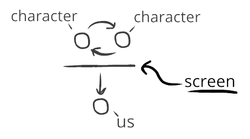

Spectator templates have a screen
In spectator templates, there’s a screen between us and what we’re spectating:

This screen is like a one-way emotional mirror: our evaluations change because of them, but their evaluations don't change because of us.
Sometimes this is a literal digital screen—we might be watching a movie, or reading the news on our phone. But it could also just be us watching people on the street from our window.
For instance:
If we're watching people walk on the street below from our third-story window, we'll be reacting to them—but they won't be reacting to us.
This is what happens when we watch a show. We'll be reacting to them—but they won't be reacting to us.
Sometimes this screen is permeable—like if we’re looking at people down on the street. At any moment we could yell to them! (Permeable screen.)
Other times, this screen is impermeable—like if we're watching a show. No matter how much we yell at the screen, we'll never influence the characters! (Impermeable screen.)
Consider:
Some spectator entertainment has impermeable screens, like static movies—where yelling at a screen does nothing.
But when we watch a play, there's a permeable screen—since not only are the actors reacting to the audience, and we could always stand up and yell at them and bring about more mutual connectivity.
Spectator entertainment with permeable screens often gives us the feeling of including us, which makes them feel vivid and interesting. Things with permeable screens feel dynamic, and allow for reactive participation.
By contrast, spectator entertainment with impermeable screens often has the feeling of excluding us, which makes them feel lifeless and grating outside very intentional circumstances.
Emotional templates. We now have two things: spectator entertainment, and spectater templates. What's the difference?
The difference is goals. If we watch a play, the goal of everyone there is to prioritize our experience as the audience. (Spectator template that's also spectator entertainment.)
But if we watch people from our window, the goal of everyone there is not to prioritize our experience as the audience. (Spectator template that's not also spectator entertainment.)
Spectator templates are common things that happen all the time. Students in classrooms; friends listening to friends bicker; patrons vaguely aware of the table over; and so on—all normal parts of daily life, where we float between different levels of mutual reactivity.
By contrast, spectator entertainment uses this template, but also alters the goals and priorities to varying degrees. This makes it a rarer version of a spectator template: